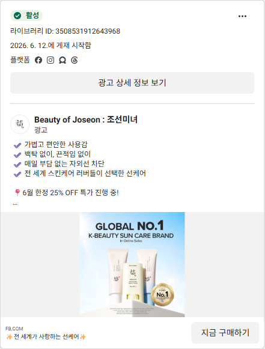

막는 브랜드는 많습니다.
'막고, 되돌리는' 브랜드는 레시피뿐입니다
11년·8천만 개 선케어 자산과 광노화 케어(스타레놀)를 가진 레시피가, 정작 자사몰 전면에선 이를 흩어진 단품으로 두고 있습니다. 이를 '차단+회복'을 한 번에 푸는 광(光)노화 풀디펜스 루틴으로 묶어, 단품 고객을 루틴 고객으로 전환시키는 전략입니다.
자산은 있는데, 자사몰 전면에선 흩어져 있습니다
선케어 + 광노화 케어, 둘 다 보유
11년 선케어 1위·누적 8천만 개(크리스탈 선스틱·선크림·선스프레이, 선몬랩) + 광노화 케어 스타레놀(코스맥스 차세대 소재)까지 갖춘 드문 브랜드.
그런데 자사몰 메인·BEST는 신제품 단품뿐
자사몰 전면 동선(메인·BEST·SHOP)은 그릭요거트 베이스·세럼·크림·PDRN 라인 중심. 선케어 본품과 신제품이 '하나의 루틴'으로 연결돼 있지 않음.
8천만 명의 신뢰가 객단가로 안 이어짐
선케어로 쌓은 신뢰가 신제품 매출·재구매로 전환되지 못하고 단품으로 흩어진다 — D2C 자산화 실패.
문제는 제품이 없는 것이 아니라, 있는 자산이 '따로 노는' 것입니다.
흩어진 자산을 하나의 루틴으로 꿰는 것이 출발점입니다.
출처 · 자사몰 직접 조사(recipecosmetics.com SHOP 20종·플래그십 12종·BEST 2026.06), 선케어 누적·스타레놀 코스맥스 소재(뉴스와이어·더kbs 2024~25). '11년 1위·8천만 개'는 자사 발표(채널·기준 한정 필요).
지금은 '선케어 강자'로도, '루틴 브랜드'로도 안 보인다
① 정체성 분산
선케어 1위·광노화 케어 자산이 자사몰 전면에서 '그릭요거트 베이스 파는 곳'으로만 인식. 11년 신뢰를 신제품 설득에 못 씀.
② 루틴·연결 부재
제품이 각자 단품으로 진열. "무엇 다음 무엇"이라는 루틴제품을 사용 순서·단계로 묶어 함께 쓰게 만드는 구조. 객단가·재구매를 동시에 끌어올린다 동선이 없어 크로스셀Cross-sell: 한 제품 구매자에게 연관 제품을 추가로 파는 것이 안 일어남.
③ '왜 자사 제품만' 부재
제품이 좋은 이유는 있어도 "이 셋을 함께 써야 하는 이유"가 없음. 타사 제품과 섞어 써도 무방 → 라인 락인 실패.
세 약점의 뿌리는 하나 — '빛(光)'이라는 브랜드 중심축이 자사몰 루틴으로 구현돼 있지 않다. 축을 세우면 셋이 동시에 풀린다.
출처 · 자사몰 BEST·SHOP SKU 리뷰수·구성 직접 분석(2026.06). 그릭요거트 베이스 리뷰 397 / 스타레놀 크림 157 / 워터필 세럼 133.
시장은 이미 '차단을 넘어 광노화 케어'로 이동했다
'Over the Makeup' — 경계의 소멸
올리브영 2026 트렌드. 메이크업·스킨케어 경계가 무너지며 선케어+베이스+안티에이징을 하나로 쓰는 수요가 공식 트렌드로 격상.
'얼리 안티에이징' — 광노화 선제 투자
20대 안티에이징 성장률이 40대 초과. '광노화 방어=매일' 인식 확산 — 차단만이 아니라 '되돌리는' 제품을 찾는다.
출처 · 식약처 2024 생산통계, CJ올리브영 트렌드·올영세일 분석(2025), EWG 2026 Annual Sunscreen Guide. 일부 자사발표(올리브영) — 다중구매는 복수 제형 동시구매 기준.
소비자는 '바르는 것' 자체에 5가지 불만을 갖고 있다
백탁
선크림 리뷰의 약 30%가 '백탁' 언급 (화해 빅데이터)
재도포 안 함
권장 2~3h 주기 준수 6%뿐. "메이크업 때문에 적게 바름" 40%(1위)
눈시림·답답함
유기자차 자극·무거운 제형 — 흡수감 불만
메이크업 무너짐
피막제(필름포머) 부재로 시간 지나면 밀림·뭉침
광노화 '회복' 부재
대부분 '막기'에만 집중 — 이미 생긴 손상은 방치
레시피의 기회
이 5개를 4단계 루틴으로 분담 해결 (14p)
핵심 통찰: 불만의 본질은 "선크림 한 통으로는 차단·유지·회복을 다 못 한다" — 그렇다면 루틴이 답이다.
출처 · 화해 빅데이터(백탁 비중), CMN 대전대 설문 300명 2024(재도포 6%·사용량 40%), fneyefocus(눈시림 성분), 코스인코리아·CJK 2025(필름포머). 일부 정성·단일출처 — 방향성 근거.
모두 '차단'이나 '회복' 중 하나에만 강하다
| 제품 | 가격 | SPF/PA | 차단 | 광노화 회복 | 한계 |
|---|---|---|---|---|---|
| 싸이닉 UV 엑스퍼트 선에센스 | 24,000 | 50+/++++ | 강 | 흔적개선 클레임 | 고강도 재생성분 없음 |
| 헤라 UV 프로텍터 톤업 | ~42,000 | 50+/++++ | 강(5중) | 없음 | 예방만·고가·톤업 중심 |
| 셀퓨전씨 레이저 UV 썬세럼 | — | 50+/++++ | 강 | 모공·아데노신 | 색소·주름축 커버 미흡 |
| 오휘 데이쉴드 콜라겐 선 | 48,000 | 50+/++++ | 강 | 미백 중심 | 탄력·주름 회복 약함·고가 |
| COSRX·CKD 레티놀 | ~2만 | 없음(야간) | 없음 | 강(레티놀) | 광분해 → 낮·선크림과 불가 |
| 메디큐브 PDRN | — | 없음 | 없음 | 재생 | SPF 라인 없음 → 단절 |
| RE:CIPE 光 루틴 ★ | 루틴 | 50+/++++ | 차단+회복 동시 | 스타레놀 | 유일하게 둘 다 |
출처 · 각 사 공식·보도자료(일간스포츠·한국경제·서울경제·뉴스와이어·ZDNet 2025~26). 임상수치(오휘 41.13% 등)는 자사발표·표본 미공개. 레시피 행은 4p~13p 전략의 종합.
'낮에 차단하며 광노화를 되돌리는' 제품이 없다
차단 진영
싸이닉·헤라·셀퓨전씨·라운드랩 — 막는 데 강하나 회복 성분은 아데노신·콜라겐 수준. 레티놀·PDRN급 재생 없음.
회복 진영
레티놀·메디큐브 PDRN — 되돌리나 SPF가 없음. 게다가 레티놀은 광분해돼 낮·선크림과 한 제품이 불가능.
레시피의 자리
가장 근접한 리얼베리어(레티놀 광안정성 한계)·리쥬란(PA+++)도 미완. 광안정 대체성분(스타레놀)+SPF50+ 결합은 레시피의 빈 땅.
레시피는 ① 11년 선케어 차단력 + ② 스타레놀(낮에 쓰는 광노화 회복) + ③ '빛' 통합 서사를 모두 가진 유일한 후보. 이 빈틈이 곧 우리의 카테고리다.
출처 · 광노화 경쟁 맵(공식·보도자료 2025~26), 레티놀 광분해(아이오페·얼루어), 바쿠치올 임상 한계(Nature/Sci Rep 2025). 스타레놀 광안정성·효능은 자사발표(임상 미공개) — 검증이 차별화 열쇠.
RE:CIPE = 광(光)노화 풀디펜스 루틴
슬로건 "빛을 넘어, 본연으로"를 진열이 아닌 루틴 구조로. 비우고(Reset)→되돌리고(Recover)→막고(Protect)→본연을 드러낸다(Reveal). 차단 한 통이 아니라 '막기+되돌리기'를 한 루틴으로 완성한다.
핵심 전환: 선케어를 자사몰 루틴의 '심장'으로 전면 배치하고 신제품으로 감싼다. 정체성·루틴·'왜 자사'가 한 번에 풀린다.
출처 · 제품 클레임·성분 조사(2026.06). 그릭요거트·워터필 SPF 미표기 → '차단'은 크리스탈 선크림(SPF50+/PA++++)이 전담, 나머지는 회복·유지·리셋 역할로 정직하게 배치.
흩어진 단품을 번호가 매겨진 한 세트로
| STEP | 제품 | 가격 | '빛' 서사 속 역할 |
|---|---|---|---|
| 1 · RESET | 워터필 레이어-리셋 세럼 | 38,400원 | 노폐물·각질을 비워 다음 단계 흡수를 연다 |
| 2 · RECOVER | 스타레놀 글로우업 크림 | 66,000원 | 낮에 쓰는 저자극 광노화 회복(레티놀 대체) |
| 3 · PROTECT ★ | 🔆 크리스탈 선크림 (전면 배치) | SPF50+/++++ | 광대역 차단 — 루틴의 심장. 8천만 개 신뢰 |
| 4 · REVEAL | 그릭요거트 프렙 베이스 | 46,000원 | 파데프리 마감 + 차단막 무너짐 방지 |
실행 ① 선케어를 자사몰 루틴 '3번'에 전면 배치
크리스탈 선크림을 메인·BEST·루틴 세트의 중심으로. "외부에서 사던 그 선크림, 이제 루틴 안에서."
실행 ② 단계 번호링 + 4종 번들
넘버즈인식 번호로 "내 루틴 몇 단계가 비었나"를 인지시키고, 4종 묶음을 토리든식 할인 번들(최대 39%)로.
출처 · 가격은 자사몰 판매가(2026.06). 단계 번호링=넘버즈인, 4종 할인 번들=토리든(90,000→55,000원, 39%) 벤치마크. 크리스탈 SPF50+/PA++++는 외부 채널 판매 기준.
고객 머릿속에 '막고 되돌리는 빛(光) 케어'로 각인시킨다
카테고리 키워드 — 비브랜드 선점(유입)
"광노화 · 낮 안티에이징 · 백탁 없는 선크림 · 자외선차단제 추천" — 검색·콘텐츠로 아직 모르는 고객을 데려온다.
성분 키워드 — 차별화 각인(설득)
"티노솔브S · 에델바이스 블루라이트 · 낮에 쓰는 레티놀(스타레놀) · 나이아신아마이드" — '왜 자사여야 하나'를 성분으로 증명.
브랜드·제품 키워드 — 전환 회수
"레시피 크리스탈 선크림 · 레시피 스타레놀 · 그릭요거트 베이스" — 데려온 수요를 자사몰에서 회수.
| 제품 | 각인시킬 한 마디 |
|---|---|
| 크리스탈 선크림 | "낮의 광대역 방패" · 백탁 없는 SPF50+ |
| 스타레놀 | "낮에 쓰는 회복" · 데이 안티에이징 |
| 그릭요거트 베이스 | "안 무너지는 마감" · 파데프리 |
| 워터필 세럼 | "흡수 리셋" · 선케어 잘 먹는 피부 |
레시피 = "막고, 되돌리는 빛 케어". 카테고리 → 성분 → 브랜드 순으로 검색 수요를 회수한다.
출처/주의 · 키워드 위계는 그로스 표준(비브랜드→브랜드 검색 퍼널) + 4~13p 성분 전략 종합. 성분 표현은 기능성 고시·임상 범위 내 사용 전제.
크리스탈 선크림: '막으면서 되돌리는' 3중기능성 차단
티노솔브SBis-Ethylhexyloxyphenol Methoxyphenyl Triazine. UVA+UVB 광대역 필터. 2026년 美 FDA가 27년 만에 승인한 신규 필터 — 광대역·고안정
50 MED 조사 후에도 98.4% 유지되는 광안정성. 아보벤존 계열의 '시간 지나면 무너지는' 한계를 보완.
에델바이스 + 나이아신아마이드 + 아데노신
에델바이스레온토포디움 알피눔. 블루라이트 수용체 OPN3 경로 차단 + MMP-1 억제 + 콜라겐 합성(p<0.01). 특허 KR101740097B1(블루라이트 방어·항노화) + 나이아신아마이드(멜라노솜 전달 35~68% 억제) + 아데노신(식약처 주름개선 고시).
왜 타사 선크림이 아니라 이것?
경쟁 차단 제품은 회복 성분이 약하고, EWG 기준 2/3가 UVA 방어 부족. 레시피는 차단+미백+주름의 3중기능성을 한 통에.
"내 선크림은 몇 nm까지 막나?" — UVA·블루라이트·근적외선 도식 + 티노솔브S 광안정성 실험 영상. 성분 덕후형 숏폼/유튜브 해설로 차단력을 '눈으로' 증명.
주의 · 티노솔브S·나이아신아마이드·아데노신은 레시피 선케어 포뮬러(선몬랩 선크림 전성분, incidecoder) 기준. 크리스탈 선크림 전성분(에델바이스·마텔잎)은 다나와 기준 — 발표 전 실물 전성분 1차 확인 권장.
출처 · incidecoder(선몬랩 전성분), 다나와(크리스탈 성분), 특허 KR101740097B1, BASF 2026(티노솔브S FDA), PMC10004670·BJD 2002(성분 기전). 일부 in vitro·단일출처.
스타레놀: 낮에도 쓰는 광노화 회복 — 선크림이 아닌 '동반자'
코스맥스 개발 차세대 안티에이징 소재
"레티놀과 바쿠치올을 잇는" 독자 소재(일본 코스메위크 출품). 레티놀 유사 작용 + 낮은 자극 포지셔닝.
레티놀의 치명적 약점을 푼다
레티놀은 광분해 → 낮·선크림과 함께 못 씀. 스타레놀은 '낮에 쓰는 회복'을 표방 → 선크림과 한 루틴에 들어갈 수 있는 거의 유일한 회복 카드.
왜 타사 레티놀/PDRN이 아니라?
레티놀=야간 한정, PDRN=화장품 투과 한계. 스타레놀은 '차단 루틴 안의 회복'이라는 자리를 차지 — 단품이 아닌 루틴 가치.
"밤에만 쓰던 안티에이징, 낮에도?" — 레티놀 광분해 vs 스타레놀 비교 콘텐츠. "낮 = 차단+회복" 메시지로 레티놀 트러블 경험자 타겟 시딩.
주의 · 스타레놀은 INCI명·임상수치 미공개(코스맥스/자사발표). "레티놀 대비 저자극·낮 사용"은 자사 클레임 — 광안정성·효능 임상 확보가 이 전략의 핵심 과제.
출처 · 코스맥스 스타레놀 기사(더kbs·코스인코리아 2024~25), 자사몰 제품 상세(product_no=31). 레티놀 광분해(아이오페·폴라초이스), 바쿠치올 임상 한계(Nature/Sci Rep 2025).
경쟁사엔 없는 '스킨케어 × 메이크업' 양 끝 무기
파데프리 마감 + 차단막 무너짐 방지
자사몰 리뷰 397건(1위)·3종 라인. 'Over the Makeup' 트렌드의 정답으로, 선크림 위 마지막 방어·고정막 역할. 선크림 재도포 불편(재도포 6%)을 '안 무너지는 마감'으로 보완.
"선크림 위, 안 무너지는 8시간" 타임랩스 + 파데프리 GRWM
노폐물 리셋 → 흡수 환경 최적화
"붉은기 없이 노폐물만 삭제". 자외선이 남긴 노폐물·각질을 비워 크림·선크림이 더 잘 먹는 피부를 만든다 — 루틴의 출발점으로 기획된 SKU.
"선크림 잘 먹는 피부 만들기" 1단계 루틴 교육 콘텐츠
두 제품이 루틴의 시작(흡수)과 끝(마감·유지)을 잡아준다 — 경쟁사가 가진 '선크림+크림'엔 없는 양 끝 무기.
주의/출처 · 그릭요거트·워터필 전성분 미확보(신제품, 화해 미등재) — 기능은 자사 클레임 기반. '무너짐 방지·흡수' 효능은 실험 데이터 확인 필요. 자사몰 상세(2026.06).
3대 광선을 막고, 이미 생긴 손상까지 되돌린다
| 광노화 범인 | 피부에 하는 일 | 레시피의 대응 성분 | 역할 |
|---|---|---|---|
| UVA/UVB | MMP 과발현 → 콜라겐 분해·DNA 손상 | 티노솔브S 등 광대역 필터(SPF50+/PA++++) | 막기 |
| 블루라이트(HEV) | OPN3 경로 → 색소침착·MMP-1↑ | 에델바이스(OPN3 차단·MMP-1 억제) | 막기+되돌리기 |
| 근적외선(IR-A) | 미토콘드리아 ROS → MMP-1↑(반응자 80%) | 항산화 성분 + 차단막 | 막기 |
| 이미 생긴 색소 | 멜라노솜 축적 | 나이아신아마이드(전달 35~68%↓) | 되돌리기 |
| 이미 생긴 주름 | 콜라겐 감소 | 아데노신(고시)+스타레놀(회복) | 되돌리기 |
"막기(크리스탈)+되돌리기(스타레놀·에델바이스·나이아신·아데노신)" — 시장 기존 제품이 둘 중 하나만 할 때, 레시피는 한 루틴에서 둘 다 한다.
출처 · PMC10722227·9307547(광노화 기전), PMC10004670(에델바이스 OPN3), BJD 2002(나이아신아마이드), PMC9804842·식약처(아데노신). in vitro·조건부 데이터 포함 — 광고 표현 시 기능성 고시 범위 내 사용 필수.
5가지 불만을 루틴의 각 단계가 분담해 푼다
| 기존 선크림 불만 | 원인 | 레시피 루틴의 해법 |
|---|---|---|
| 백탁 | 무기자차 분산 한계 | 티노솔브S 등 광대역 유기필터 + 톤업 베이스로 보정 |
| 재도포 안 함(6%) | 메이크업 위 덧바름 불편 | 그릭요거트 베이스가 '안 무너지는 마감'으로 차단 지속 |
| 눈시림·답답함 | 유기자차 자극·무거움 | 워터필 리셋으로 흡수↑ + 다이소 무기자차 옵션(징크+티타늄) |
| 메이크업 무너짐 | 피막제 부재 | 그릭요거트 베이스(파데프리 고정막) |
| 광노화 회복 부재 | '막기'에만 집중 | 스타레놀+에델바이스+나이아신아마이드로 '되돌리기' 탑재 |
출처 · 5p 페인 출처 + 10~13p 성분 근거. 다이소 선몬랩=100% 무기자차(징크옥사이드+티타늄디옥사이드, 5,000원, 다이소몰). 효능은 성분 기전·자사 클레임 기반(개별 임상 확인 권장).
단품 고객을 루틴 고객으로 전환시키는 3개 장치
장치 1 · 光노화 진단 퀴즈
피부고민 3~6문항 → "당신에게 비어있는 단계" 진단 → 4스텝 추천 1클릭 장바구니. AOV객단가: 주문 1건당 평균 구매액 핵심 드라이버.
장치 2 · 단계 번들 + 무료배송 바
2→3→4종 단계적 할인 업셀. 미니카트 무료배송 임박 바·증정으로 가격 저항 완화.
장치 3 · 루틴 정기배송 (빈틈 선점)
"다 쓰는 선크림+세럼 자동배송 + 단계 콘텐츠". 순수 스킨케어 루틴 구독은 인디 K뷰티 공백.
플라이휠: 선케어 유입 → 퀴즈로 빈 단계 자각 → 번들로 AOV↑ → 구독으로 리텐션재구매를 지속하는 비율. D2C 수익성의 핵심↑ → 후기 UGC가 신규 유입.
출처 · Kiehl's(Inference Beauty), 토리든·Glow Recipe(화해·DTC Patterns), 번들 AOV·LTV(ecomhint 2025, 추정). 수치는 벤치마크 기반.
차단·회복을 '눈으로 증명'하는 콘텐츠 퍼널
경쟁사는 이미 이걸로 컸다
아누아 어성초 성분스토리 틱톡 24억 뷰 → 매출 +5,382%(’20→’24). 조선미녀 선크림 틱톡으로 매출의 35~55%. CeraVe #50억 뷰.
레시피의 티노솔브S 광안정성·에델바이스 블루라이트 실험은 '성분 덕후 콘텐츠'의 완벽한 소재. 차단력을 눈으로 보여주는 숏폼으로 비브랜드 검색 선점.
출처 · 싱클리·코스모닝(아누아·조선미녀), House of Marketers(CeraVe), syncly.app·get-ryze(콘텐츠 성과, 일부 추정/SaaS 자체데이터).
유입은 신뢰로, 전환은 루틴으로, 유지는 구독으로
| 전략 | 채널 조합 | 경쟁사 캡쳐 포인트 | 기대 증분 |
|---|---|---|---|
| 루틴 번들 전환 | 자사몰 번들 LP + 메타·틱톡 리타겟 + 화해 어워즈 검증 | 토리든: 어워즈 노출 후 주문 +26% / Glow Recipe 미니카트 | AOV +25~40%·전환 2~3배 |
| CRM 재구매 | 구매 후 104일 리오더 + 루틴 크로스셀 메시지 | 로열티 결합 시 재구매 +40%(Jane Iredale) | 재구매율 30~45%대 |
| 옴니채널 체험 | 홈쇼핑(CJ)·다이소 + (신규)올영 체험존·QR | 올영 오늘드림 1,499만 건·이용 48%·옴니회원 40% | 온·오프 연결 구매 |
| 선케어 시즌 캠페인 | 틱톡 Video Shopping Ads + 마이크로 시딩 + DOOH | Boots 선케어: ROAS +133%·결제비용 -48%·매출 £2.5M 증분 | 뷰티 틱톡 ROAS 4~6x |
원칙: 선케어 신뢰(Owned·Earned)로 싸게 유입 → 루틴 번들로 객단가 → 구독으로 락인 — CAC고객획득비용↓, LTV고객 생애가치↑.
출처 · 화해(토리든), DTC Patterns(Glow Recipe), 이코노미스트(올영 옴니), TikTok for Business·Brands&Agencies(Boots), benly.ai(ROAS, 추정). 레시피 올영 입점은 미확인 → 신규 추진 가정.
우리의 액션엔 지금 돌아가는 경쟁사 광고라는 근거가 있다

"백탁 없이 매일 차단" + GLOBAL NO.1 + 6월 25% OFF
→ 우리 액션: 시즌 선케어 캠페인·'NO.1 신뢰' 메시지에 '회복'을 얹어 차별화
어성초 성분 스토리텔링 + 1+1 크림 증정 (4.8만→1만원대)
→ 우리 액션: 티노솔브S·에델바이스 성분 콘텐츠 + 루틴 번들
본품 X2 + 세럼 증정 세트 "이 모든 게 2만원대"
→ 우리 액션: 4스텝 루틴 번들 업셀로 객단가↑경쟁사는 성분·세트·시즌 세일의 효과를 이미 검증했다. 레시피는 같은 무기에 '막고+되돌리는 광노화 루틴'을 얹어 한 단계 위에서 싸운다.
출처 · Meta 광고 라이브러리(대한민국, 2026.06 활성 광고 직접 캡처, 라이브러리 ID 보유). 경쟁사 광고는 각 사 자산으로 경쟁 분석 목적의 인용.
'한 달 전 첫인상 → 한 달 후 변화'를 함께 보여주는 후기
B&A 사진 한 장보다 한 달의 과정이 신뢰를 만든다 — "반신반의 → 주차별 변화 → 실감"의 종단 저널 포맷(네이버 '한달 후기' 콘텐츠 차용)을 루틴 후기로.
시작 — 반신반의
"낮에 쓰는 회복? 선크림에 회복까지?" 반신반의하며 4스텝 루틴 시작.
첫인상 — 가벼움
아직 큰 변화는 모르지만 백탁·끈적임 없이 아침 루틴이 가벼워짐.
체감 시작
"이때부터" — 톤이 균일해지고 칙칙함이 덜해진 게 느껴짐.
한 달 후 — 실감
색소·결 정돈, 주변에서 "요즘 피부 좋아졌다". 꾸준히 쓰게 됨 → 재구매·구독으로.
왜 단순 B&A가 아니라 '종단 후기'인가
신뢰 — 과정을 보여주면 광고가 아닌 '경험'이 된다. 검색 — '레시피 한달 후기' 롱테일 선점. 재구매 — "2주부터 체감" 서사가 꾸준한 사용의 이유가 된다.
씨딩 크리에이터에게 '4주 변화 저널' 가이드 배포 → 자사몰 PDP·블로그·릴스에 동일 포맷으로 연재.
주의 · 위 후기는 콘텐츠 포맷 예시(실측 데이터 아님). 스타레놀 효능 임상 미공개 → 후기는 정성·체감 표현 중심, 기능성 표현은 고시 범위 내 사용.
전략의 모든 장치엔 검증된 레퍼런스가 있다
| 레퍼런스 | 벤치마킹한 '바로 그 점' | 성과 | 레시피 적용 |
|---|---|---|---|
| 아누아 | 단일 성분(어성초) 스토리텔링으로 글로벌 바이럴 | 틱톡 24억뷰·매출 +5,382% | 티노솔브S·에델바이스 성분 콘텐츠 |
| 조선미녀 | 선크림을 틱톡 콘텐츠 카테고리로 선점 | 선 라인이 매출 35~55% | 선케어 시즌 숏폼 캠페인 |
| Kiehl's | 퀴즈로 5단계 루틴 개인화 추천 | 전환율 +30% | 光노화 진단 퀴즈 |
| 토리든 | 히트 단품 앵커 → 4종 39% 번들 업셀 | 어워즈 후 주문 +26% | 4스텝 번들·화해 검증 |
| Boots(UK) | 선케어 시즌 틱톡 VSA 집행 | ROAS +133%·£2.5M 증분 | 시즌 퍼포먼스 믹스 |
| 리얼베리어·리쥬란 | '차단+회복' 결합 시도(미완) | 레티놀 광안정성·PA+++ 한계 | 스타레놀+SPF50+로 완성 |
출처 · 싱클리·BoF(아누아·조선미녀), Inference Beauty(Kiehl's), 화해(토리든), TikTok for Business(Boots), 마이리얼베리어·다음뷰(리얼베리어·리쥬란). 일부 단일출처 → 방향성 근거.
6개월 안에 자사몰을 '광노화 루틴 커머스'로
Phase 1 · 0~3개월 — 세우기
① 크리스탈 선크림 자사몰 3번 전면 배치 · ② 光노화 진단 퀴즈·4스텝 번들 LP · ③ 성분 스토리텔링 UGC 시딩(티노솔브S·에델바이스).
목표: 선케어 자사몰 매출 비중 회복, 번들 도입.
Phase 2 · 3~6개월 — 키우기
① 루틴 정기배송 론칭 · ② 시즌 틱톡 VSA·DOOH 풀가동 · ③ CRM 리필·(신규)올영 체험 연동.
목표: 재구매·구독 전환 본격화, LTV 개선.
출처 · *KPI 목표는 벤치마크 기반 추정(번들 AOV +25~40%, 퀴즈 CVR +20~40%, 뷰티 틱톡 ROAS 4~6x). 자사 베이스라인 측정 후 확정.
같은 트래픽에서 객단가·재구매가 동시에 올라간다
객단가 (AOV)
단품 → 루틴 번들. 벤치마크상 +25~40% 증분(추산).
재구매·LTV
구독·CRM으로 번들 고객 LTV 단품의 2.7배(추산).
효율 (CAC)
선케어 신뢰로 유입 → 획득비용·유료의존도 절감.
출처 · 막대는 벤치마크 기반 개념 시뮬레이션(실측 아님). 번들 AOV·LTV(ecomhint), 퀴즈 CVR(Kiehl's). 자사 데이터 검증 전제.
흩어진 자산을 하나의 루틴으로 잇는 일, 제가 잘합니다
저는 데이터로 병목을 찾고, 흩어진 제품·채널을 하나의 서사로 묶어 객단가와 재구매를 만들어왔습니다. 레시피의 과제는 분명합니다 — 이미 가진 8천만 개의 빛과 광노화 케어를, 자사몰에서 하나의 루틴으로 다시 켜는 것. 진단 퀴즈·선케어 전면 배치·성분 콘텐츠·4스텝 번들·구독까지, 입사 첫날부터 실행하겠습니다.